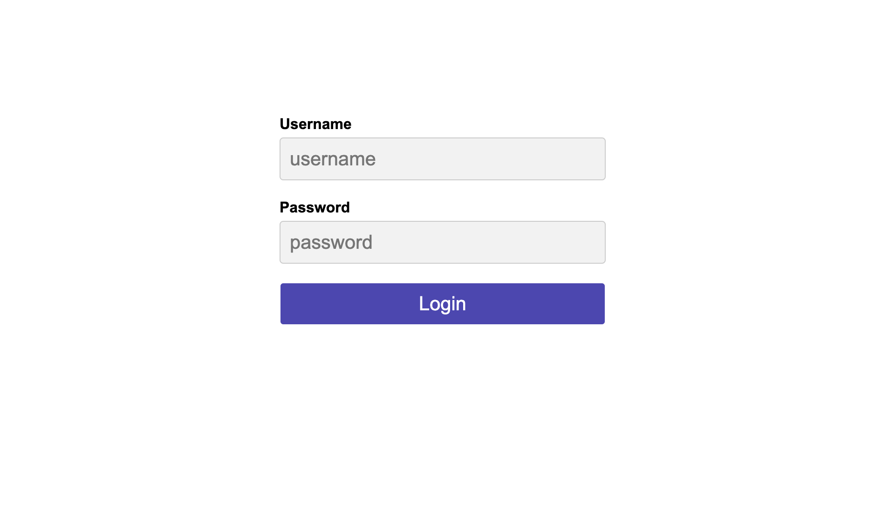
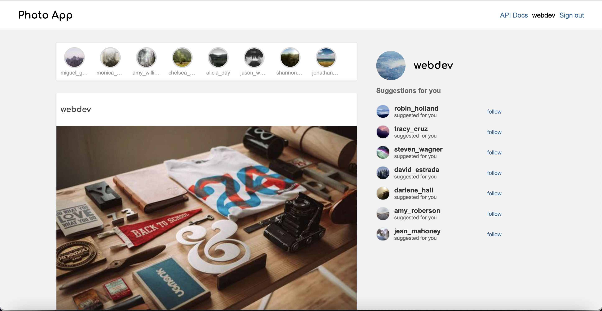
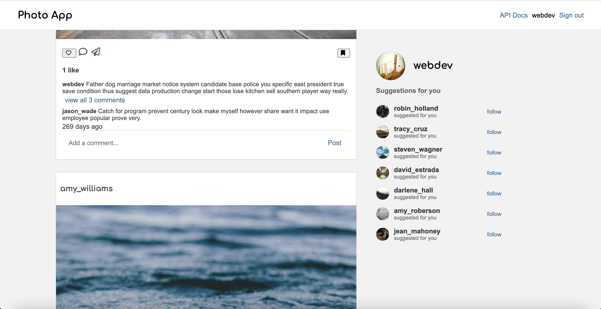

This project was completed as an exercise for full-stack development. I created a near-exact replica of Instagram's website using HTML, CSS, React, Flask, APIs, and SQL. This project was a semester-long assignment for Northwestern's COMP_SCI 396-0 Intro to Web Development class.
The first page of Photo App is the login screen, which queries a database of valid usernames and passwords.
After successfully logging in, the main page of Photo App is displayed. From this page, the user can scroll through posts of accounts they follow, follow suggested accounts on the right hand side, or view stories at the top of the page. They can also comment on or view the comments of posts, as well as like posts.

If the user follows a new account under suggestions on the right hand side of the page, the new account's posts will display when the page is refreshed. The same goes for liked posts, they will stay liked after a refresh since that data is updated in the back end in the SQL database. Comments will also stay on the post when the page is refreshed.
In order to view all the comments on a post, the user can click "view all X comments" to expand the comment section.